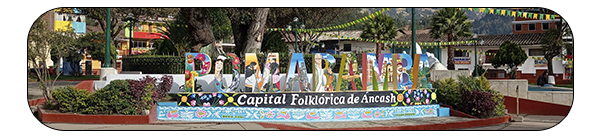

|  |
|
 |
EL GRAN YAYNO.- Ubicado a 20 Km. al Sur-Oeste de la Ciudad de Pomabamba. Es un cono truncado cuya altitud es de 4,000 m.s.n.m.Las construcciones parecen ser como una réplica de Macha Picchu, la diferencia que tiene con Chavín de Huantar es sólo por que carece de tallados líticos. Existen más de 100 construcciones de diferentes tipos. Durante el año casi solamente es visitado por Turistas generalmente Europeos.Desde Pomabamba se puede viajar a pie, a lomo de caballo, pero también se puede ir con vehículo hasta Huayllán y desde allí a pie demorando 02 horas, cuesta arriba. |
 |
NEVADO DE JANCAPAMPA.- Es muy hermoso es parte de la Cordillera Blanca al accidente de las Andes de Norte. El pico más alto, es el pico Pomabamba a 6258 msn.m El accidente mas hermoso de la configuración natural del puma, cincelado en las rocas graniticas y milenarias, es frecuentado por turistas de otros pases y por los escolares de pomaria, secundaria y superior de Pomabamba. Jancapampa en justicia la segunda maravilla de Pamabamba, porque pronto será el pueblo de desarrollo de la provincia a través del turismo, para practicar el alpinismo et Sky, lo pesca artesanal caminata,la caza ,canotaje, ecoturismo, etc. |
 |
WICROCOCHA.- La laguna de WICROCOCHA se encuentra ubicada al altura de la comunidad “ Comunidad Campesina de José Martin Rio Sotero de Conopa. Por el norte limita Con la Comunidad Campesina 14 Incas de Chinchobamba y por el sur con la Comunidad Campesina del Nevado de Jancapampa . Puedes ir 3 horas Con carro de la provincia de Pomabamba. Aproximadamente su Altitud es de 3950 m.s.n.m. |
 |
RAYO GAGA.- Desde la Ciudad de los Cedros dista 20 Kms. está situado al Sur de la Comunidad de Atapachca, comprensión del distrito de Huayllán. Las construcciones de estos restos arqueológicos son de tipo militar, seguramente fue una guarnición que protegía a Awkin Marca. |
 |
CURAYACU. - Curayacu presenta un valle poco accidentado húmedo y cubierto de pikuyo rodeado de bosques de eucalipto que representa un lugar hermoso, con armonía de las edificaciones modernas y tradicionales, representa un lugar hermoso, con armonía de las edificaciones modernas y tradicionales, representa un lugar apacible y tranquilo para disfrutar de la naturaleza que lo rodea. Para llegar a este legendario manantial, se parte de la plaza de amras, continuando por el Jr. Huamachuco hasta la plazuela de El Convento, Jrión Arica a unos 100 metros a la derecha. |
NOMBRES Y APELLIDOS: QUISPE GONZALES EMER CORREO: EMERQUISPE@GMAIL.COM |
 |
ZONAS TURÌSTICAS DE POMABAMBA |